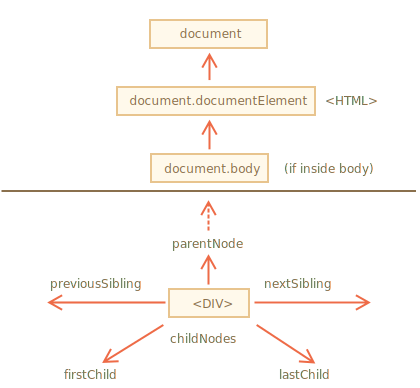

libs:
DOM 让我们可以对元素和它们中的内容做任何事，但是首先我们需要获取到对应的 DOM 对象。
对 DOM 的所有操作都是以 document 对象开始。它是 DOM 的主“入口点”。从它我们可以访问任何节点。
这里是一张描述对象间链接的图片，通过这些链接我们可以在 DOM 节点之间移动。

让我们更详细地讨论它们吧。
最顶层的树节点可以直接作为 document 的属性来使用：
<html> = document.documentElement
: 最顶层的 document 节点是 document.documentElement。这是对应 <html> 标签的 DOM 节点。
<body> = document.body
: 另一个被广泛使用的 DOM 节点是 <body> 元素 — document.body。
<head> = document.head
: <head> 标签可以通过 document.head 访问。
````warn header="这里有个问题：document.body 的值可能是 null"
脚本无法访问在运行时不存在的元素。
尤其是，如果一个脚本是在 <head> 中，那么脚本是访问不到 document.body 元素的，因为浏览器还没有读到它。
所以，下面例子中的第一个 alert 显示 null：
<html>
<head>
<script>
*!*
alert( "From HEAD: " + document.body ); // null，这里目前还没有 <body>
*/!*
</script>
</head>
<body>
<script>
alert( "From BODY: " + document.body ); // HTMLBodyElement，现在存在了
</script>
</body>
</html>
```smart header="在 DOM 的世界中，`null` 就意味着“不存在”"
在 DOM 中，`null` 值就意味着“不存在”或者“没有这个节点”。
```
## 子节点：childNodes，firstChild，lastChild
从现在开始，我们将使用下面这两个术语：
- **子节点（或者叫作子）** — 对应的是直系的子元素。换句话说，它们被完全嵌套在给定的元素中。例如，`<head>` 和 `<body>` 就是 `<html>` 元素的子元素。
- **子孙元素** — 嵌套在给定元素中的所有元素，包括子元素，以及子元素的子元素等。
例如，这里 `<body>` 有子元素 `<div>` 和 `<ul>`（以及一些空白的文本节点）：
```html run
<html>
<body>
<div>Begin</div>
<ul>
<li>
<b>Information</b>
</li>
</ul>
</body>
</html>
```
……`<body>` 元素的子孙元素不仅包含直接的子元素 `<div>` 和 `<ul>`，还包含像 `<li>`（`<ul>` 的子元素）和 `<b>`（`<li>` 的子元素）这样的元素 — 整个子树。
**`childNodes` 集合列出了所有子节点，包括文本节点。**
下面这个例子显示了 `document.body` 的子元素：
```html run
<html>
<body>
<div>Begin</div>
<ul>
<li>Information</li>
</ul>
<div>End</div>
<script>
*!*
for (let i = 0; i < document.body.childNodes.length; i++) {
alert( document.body.childNodes[i] ); // Text, DIV, Text, UL, ..., SCRIPT
}
*/!*
</script>
...more stuff...
</body>
</html>
```
请注意这里的一个有趣的细节。如果我们运行上面这个例子，所显示的最后一个元素是 `<script>`。实际上，文档下面还有很多东西，但是在这个脚本运行的时候，浏览器还没有读到下面的内容，所以这个脚本也就看不到它们。
**`firstChild` 和 `lastChild` 属性是访问第一个和最后一个子元素的快捷方式。**
它们只是简写。如果元素存在子节点，那么下面的脚本运行结果将是 true：
```js
elem.childNodes[0] === elem.firstChild
elem.childNodes[elem.childNodes.length - 1] === elem.lastChild
```
这里还有一个特别的函数 `elem.hasChildNodes()` 用于检查节点是否有子节点。
### DOM 集合
正如我们看到的那样，`childNodes` 看起来就像一个数组。但实际上它并不是一个数组，而是一个 **集合** — 一个类数组的可迭代对象。
这个性质会导致两个重要的结果：
1. 我们可以使用 `for..of` 来迭代它：
```js
for (let node of document.body.childNodes) {
alert(node); // 显示集合中的所有节点
}
```
这是因为集合是可迭代的（提供了所需要的 `Symbol.iterator` 属性）。
2. 无法使用数组的方法，因为它不是一个数组：
```js run
alert(document.body.childNodes.filter); // undefined（这里没有 filter 方法！）
```
集合的性质所得到的第一个结果很不错。第二个结果也还可以忍受，因为如果我们想要使用数组的方法的话，我们可以使用 `Array.from` 方法来从集合创建一个“真”数组：
```js run
alert( Array.from(document.body.childNodes).filter ); // function
```
```warn header="DOM 集合是只读的"
DOM 集合，甚至可以说本章中列出的 **所有** 导航（navigation）属性都是只读的。
我们不能通过类似 `childNodes[i] = ...` 的操作来替换一个子节点。
修改子节点需要使用其它方法。我们将会在下一章中看到它们。
```
```warn header="DOM 集合是实时的"
除小部分例外，几乎所有的 DOM 集合都是 **实时** 的。换句话说，它们反映了 DOM 的当前状态。
如果我们保留一个对 `elem.childNodes` 的引用，然后向 DOM 中添加/移除节点，那么这些节点的更新会自动出现在集合中。
```
````warn header="不要使用 `for..in` 来遍历集合"
可以使用 `for..of` 对集合进行迭代。但有时候人们会尝试使用 `for..in` 来迭代集合。
请不要这么做。`for..in` 循环遍历的是所有可枚举的（enumerable）属性。集合还有一些“额外的”很少被用到的属性，通常这些属性也是我们不期望得到的：
```html run
<body>
<script>
// 显示 0，1，length，item，values 及其他。
for (let prop in document.body.childNodes) alert(prop);
</script>
</body>兄弟节点（Sibling） 是指有同一个父节点的节点。
例如，<head> 和 <body> 就是兄弟节点：
<html>
<head>...</head><body>...</body>
</html><body> 可以说是 <head> 的“下一个”或者“右边”兄弟节点。<head> 可以说是 <body> 的“前一个”或者“左边”兄弟节点。下一个兄弟节点在 nextSibling 属性中，上一个是在 previousSibling 属性中。
可以通过 parentNode 来访问父节点。
例如：
// <body> 的父节点是 <html>
alert( document.body.parentNode === document.documentElement ); // true
// <head> 的后一个是 <body>
alert( document.head.nextSibling ); // HTMLBodyElement
// <body> 的前一个是 <head>
alert( document.body.previousSibling ); // HTMLHeadElement上面列出的导航（navigation）属性引用 所有 节点。例如，在 childNodes 中我们可以看到文本节点，元素节点，甚至如果注释节点存在的话，也能访问到。
但是对于很多任务来说，我们并不想要文本节点或注释节点。我们希望操纵的是代表标签的和形成页面结构的元素节点。
所以，让我们看看更多只考虑 元素节点 的导航链接（navigation link）：
这些链接和我们在上面提到过的类似，只是在词中间加了 Element：
children — 仅那些作为元素节点的子代的节点。firstElementChild，lastElementChild — 第一个和最后一个子元素。previousElementSibling，nextElementSibling — 兄弟元素。parentElement — 父元素。````smart header="为什么是 parentElement? 父节点可以不是一个元素吗？"
parentElement 属性返回的是“元素类型”的父节点，而 parentNode 返回的是“任何类型”的父节点。这些属性通常来说是一样的：它们都是用于获取父节点。
唯一的例外就是 document.documentElement：
alert( document.documentElement.parentNode ); // document
alert( document.documentElement.parentElement ); // null因为根节点 document.documentElement（<html>）的父节点是 document。但 document 不是一个元素节点，所以 parentNode 返回了 document，但 parentElement 返回的是 null。
当我们想从任意节点 elem 到 <html> 而不是到 document 时，这个细节可能很有用：
while(elem = elem.parentElement) { // 向上，直到 <html>
alert( elem );
}
让我们修改上面的一个示例：用 `children` 来替换 `childNodes`。现在它只显示元素：
```html run
<html>
<body>
<div>Begin</div>
<ul>
<li>Information</li>
</ul>
<div>End</div>
<script>
*!*
for (let elem of document.body.children) {
alert(elem); // DIV, UL, DIV, SCRIPT
}
*/!*
</script>
...
</body>
</html>
```
## 更多链接：表格 [#dom-navigation-tables]
到现在，我们已经描述了基本的导航（navigation）属性。
方便起见，某些类型的 DOM 元素可能会提供特定于其类型的其他属性。
表格（Table）是一个很好的例子，它代表了一个特别重要的情况：
**`<table>`** 元素支持 (除了上面给出的，之外) 以下这些属性:
- `table.rows` — `<tr>` 元素的集合。
- `table.caption/tHead/tFoot` — 引用元素 `<caption>`，`<thead>`，`<tfoot>`。
- `table.tBodies` — `<tbody>` 元素的集合（根据标准还有很多元素，但是这里至少会有一个 — 即使没有被写在 HTML 源文件中，浏览器也会将其放入 DOM 中）。
**`<thead>`，`<tfoot>`，`<tbody>`** 元素提供了 `rows` 属性：
- `tbody.rows` — 表格内部 `<tr>` 元素的集合。
**`<tr>`：**
- `tr.cells` — 在给定 `<tr>` 中的 `<td>` 和 `<th>` 单元格的集合。
- `tr.sectionRowIndex` — 给定的 `<tr>` 在封闭的 `<thead>/<tbody>/<tfoot>` 中的位置（索引）。
- `tr.rowIndex` — 在整个表格中 `<tr>` 的编号（包括表格的所有行）。
**`<td>` 和 `<th>`：**
- `td.cellIndex` — 在封闭的 `<tr>` 中单元格的编号。
用法示例：
```html run height=100
<table id="table">
<tr>
<td>one</td><td>two</td>
</tr>
<tr>
<td>three</td><td>four</td>
</tr>
</table>
<script>
// 获取带有 "two" 的 td（第一行，第二列）
let td = table.*!*rows[0].cells[1]*/!*;
td.style.backgroundColor = "red"; // highlight it
</script>
```
规范：[tabular data](https://html.spec.whatwg.org/multipage/tables.html)。
HTML 表单（form）还有其它导航（navigation）属性。稍后当我们开始使用表单（form）时，我们将对其进行研究。
## 总结
给定一个 DOM 节点，我们可以使用导航（navigation）属性访问其直接的邻居。
这些属性主要分为两组：
- 对于所有节点：`parentNode`，`childNodes`，`firstChild`，`lastChild`，`previousSibling`，`nextSibling`。
- 仅对于元素节点：`parentElement`，`children`，`firstElementChild`，`lastElementChild`，`previousElementSibling`，`nextElementSibling`。
某些类型的 DOM 元素，例如 table，提供了用于访问其内容的其他属性和集合。